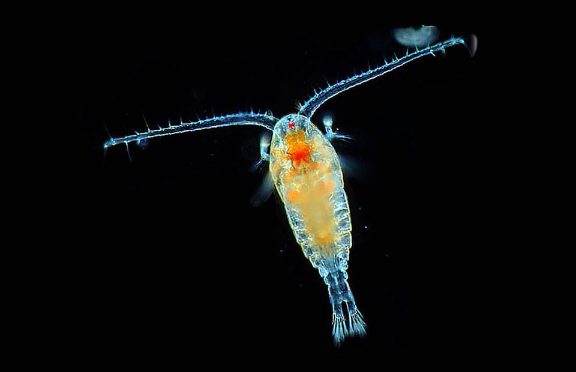

Epipelagic Zone
0 - 200 meters from sea level
The "Sunlight Zone". It's characterized by the sunlight that reaches this zone, allowing the presence of beings capable of photosynthesis. About 90% of marine life resides here, . This zone plays a crucial role in supporting oceanic biodiversity.
Plankton

Plankton refers to tiny organisms that float in ocean currents, encompassing both plant-like phytoplankton and animal-like zooplankton. Phytoplankton, such as algae, are essential as they generate oxygen, serve as the foundation of marine food chains, and help regulate global climate by absorbing carbon dioxide. Zooplankton, including small animals like krill, provide food for larger marine creatures, supporting biodiversity from small fish to whales. Plankton's role in marine ecosystems is critical for biodiversity maintenance, environmental health monitoring, and understanding climate impacts on oceans.
Light Penetration
The epipelagic zone tends to extend through a shorter distance in coastal waters where the water turbulence stops the penetration of light. It’s also relevant that different wavelengths of light have different penetration. So some colors, like red, are absent sooner than others.